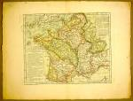

Carte physique, ou Géographie naturelle de la France, divisée par chaînes de montagnes et aussi par terreins de fleuves et rivières. Par Phil[ippe] Buache. [Schaal 1:2.800.000.] Kopergravure, gekleurd, 385 x 480 mm. [Paris,] 1770. -- (COLLBN Port. 81 N 117)
De topografische kartering op een grote schaal is niet de enige ingrijpende verandering die de cartografie tegen het einde van de zeventiende eeuw onderging. De wereldkaarten van Athanasius Kircher van de oceaanstromingen (1665) en van Edmond Halley van de ‘tradewinds’ (1688) en van de variaties van het kompas (1701) zijn de eerste voorbeelden van een cartografie die de geografische verspreiding van één enkel of van meer thema’s in relatie tot elkaar laat zien. Als pionier op het gebied van de thematische cartografie neemt Philippe Buache (1700-1773) een bijzondere plaats in als auteur van de eerste geologische kaarten. Hij was lid van de Académie vanaf 1730 en werd in 1729 benoemd tot ‘premier géographe du roi’.
Zijn belangstelling gold vooral de structuur van de aarde, die hij zich voorstelde als een geraamte van bergketens, die zich op de oceaanbodem voortzetten en met elkaar in verbinding staan. Zo construeerde hij een systeem van gebergten, die de aarde in ‘kommen’ indelen, welke op hun beurt weer de stroomgebieden van de rivieren vormen.
De hier getoonde kaart laat zien hoe Frankrijk in deze structuur te vangen was. Buaches meest bekende kaart, die van het Kanaal uit 1752, waarin hij het bodemprofiel met behulp van diepte-isolijnen aangeeft, is hierin verwerkt. Engeland en Frankrijk zijn door een onderzeese bergrug in het Nauw van Calais met elkaar verbonden. Met deze enigszins bizarre visie op de fysisch-geografische gesteldheid van onze aarde liep hij vooruit op de kaarten die vandaag de dag het relief van de bodem van de oceanen tonen.
Literatuur
- G. Kish, ‘Early thematic mapping: the work of Philippe Buache’, in: Imago mundi, 28 (1976), p. 129-136.
- G. Kish, La carte, image des civilisations. Paris 1980, p. 275-276.
- A.H. Robinson, Early thematic mapping in the history of cartography. Chicago [etc.] 1982, p. 87-90.
| vorige pagina | top pagina |